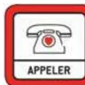
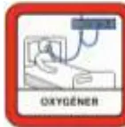
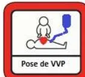
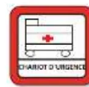
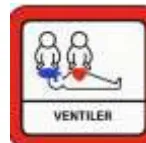
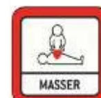
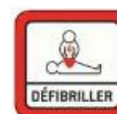
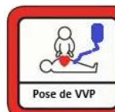

Etiquette patient
URGENCE VITALE PEDIATRIQUE
en service d'hospitalisation conventionnelle
Poids estimé =
(Age + 4) x 2
Date : .. / .. / 20..
ACTIONS SIMULTANÉES A ENTREPRENDRE AVANT L'ARRIVEE DE L'EQUIPE DE REANIMATION
Situation aiguë mettant en jeu le pronostic vital et nécessitant une action immédiate
Par exemple (non exhaustif):
Horaires
.. H ..

Appeler la ligne URGENCE VITALE au .....
.. H ..
Appeler des renforts
Faire apporter le chariot d'urgence et le DSA
Hypotension –Etat de choc
Position : surélever les membres inférieurs
2ème VVP si possible
Hémocue si disponible .....
Détresse respiratoire
Position :
½ assise pour > 2 ans
Proclive 30° < 2 ans
Coma
Position : PLS
Température .....
Glycémie .....
Mesure rapprochée des paramètres vitaux (par ex, toutes les 3 min)
Maintien à jeun
Glycémie

Libérer les voies aériennes
O2 Ouvert à 15 L/minute au masque à haute concentration

VVP fonctionnelle :
- Vérifier VVP en place ou poser 1 VVP AVEC robinet
- Base de NaCl 0,9% seringue de 10 ml pour purger la voie
Etiquette patient
ARRÊT CARDIAQUE PEDIATRIQUE
en service d'hospitalisation conventionnelle
Poids estimé =
(Age + 4) x 2
Date : .. / .. / 20..
ACTIONS SIMULTANÉES A ENTREPRENDRE AVANT L'ARRIVEE DE L'EQUIPE DE REANIMATION
Constat Arrêt Cardiaque
- Pas de conscience
- Ne respire pas ou agonie (Gasp)
- Il n'est pas nécessaire de chercher le pouls !
Horaires
.. H ..
Appeler la ligne URGENCE VITALE au .....
.. H ..

Appeler des renforts
Faire apporter le chariot d'urgence et le DSA
Vérifier le système d'aspiration

Vérifier et libérer les voies aériennes
O2 Ouvert à 15 l/min
Réalisation 5 insufflations au BAVU
⚠ ACR majoritairement HYPOXIQUE chez l'enfant

Débuter les Compressions Thoraciques (CT)
Rythme 15 compressions / 2 ventilations
4-5 cm de profondeur - Fréquence 100/120 min - Se relayer toutes les 2 minutes - NE JAMAIS S'ARRÊTER
.. H ..

Allumer le défibrillateur (DSA), poser les patches, et suivre les instructions
(Arrêter ponctuellement les CT si demandé par le DSA)
- Patch antéro-postérieur jusqu'à 25 kg soit 8 ans
- « mode pédiatrique » jusqu'à 25 kg soit 8 ans
.. H ..

VVP ou KTIO fonctionnel
- Vérifier VVP / KTIO en place
- Poser 1 VVP / KTIO AVEC robinet
- Base de NaCl 0,9% seringue de 10 ml pour purger la voie
Préparer deux seringues et les étiqueter :
Poids estimé = (Age + 4) x 2
| FRÉQUENCE RESPIRATOIRE | ||
|---|---|---|
| Polypnée (/min) | FR normale | |
| 1 mois | 55 | 35 |
| < 1 an | 40 | 30 |
| < 10 ans | 25 | 20 |
| >10 ans | 20 | 15 |
| CONSTANTES HÉMODYNAMIQUES | ||||
|---|---|---|---|---|
| 1 mois | 1-12 mois | 1-10 ans | >10 ans | |
| PAM limite inf. | 45 | 55 | 55-60 | 60 |
| PAS limite inf. | 55 | 75 | 75-80 | 90 |
| FC normale | 80-180 | 50-150 | ||
| MATÉRIEL D'INTUBATION | |||
|---|---|---|---|
| Age | SIT (à ballonnet) | Repère SIT | Lame |
| < 6 mois | De 3 à 3.5 | Voie orale (< 10 kg) : 6 cm + poids (kg) |
0 (D/C) |
| 6-12 mois | 3.5 à 4 | Voie orale (>10kg) : (Age/2) + 12 cm |
1 (D/C) |
| 1-2 ans | 4 à 4.5 | 2 (C) | |
| >2ans | (Age/4) + 3.5 | 3 (C) | |
| Adulte | 4 (C) | ||
| KT | Aiguille bleue (25 mm) : nouveau-né, nourrisson, enfant |
| INTRA-OSSEUX | Aiguille jaune (45 mm) : obèse, humérale chez l'adulte |
Dilution : 1 ml (=1 mg) dans 50 ml de SSI
Posologie : poids (kg)/3 = débit (ml/h) = 0,1 mcg/kg/min
Dilution : 0,5 ml (=1 mg) dans 50 ml de SSI
Posologie : poids (kg)/3 = débit (ml/h) = 0,1 mcg/kg/min
Dilution : 4 ml (=50 mg) dans 50 ml de SSI
Posologie : poids(kg)/3 = débit (ml/h) = 5 mcg/kg/min
Dilution : prendre 1 mg d'adrénaline soit 1 ml + 9 ml de NaCl 0.9% (=SSI)
Posologie en cas d'ACR : 10 mcg/kg en IVD soit 0.1 ml/kg de la solution diluée (max 10 ml = max 1 mg)
| Poids (kg) | 3 | 5 | 10 | 15 | 20 | 25 | 30 | 35 | 40 | 45 | 50 |
|---|---|---|---|---|---|---|---|---|---|---|---|
| solution diluée adrénaline (ml) | 0,3 | 0,5 | 1 | 1,5 | 2 | 2,5 | 3 | 3,5 | 4 | 4,5 | 5 |
Dilution : 1 ampoule de Cordarone + 12 ml de SG 5%
Posologie : 5 mg/kg en IVD après dilution
A noter en cas de torsade de pointe( = TV) : MgSO4 15% 50 mg/kg soit 0.3 ml/kg IVD (max 2g)
| Poids (kg) | 5 | 10 | 15 | 20 | 25 | 30 | 35 | 40 | 45 | 50 |
|---|---|---|---|---|---|---|---|---|---|---|
| solution diluée cordarone (ml) | 2,5 | 5 | 7,5 | 10 | 12,5 | 15 | 17,5 | 20 | 22,5 | 25 |
Dilution : 2 ampoules (= 2 ml) d'Isuprel + 18 ml de SG5% : concentration 20 γ/ml
Posologie : en continue : 0,05 γ/kg/min à 0,2 γ/kg/min (max 20 γ/min)
| Poids (kg) | 5 | 10 | 15 | 20 | 25 | 30 | 35 | 40 | 45 | 50 |
|---|---|---|---|---|---|---|---|---|---|---|
| Solution diluée poso min (ml/h) | 0,7 | 1,5 | 2,2 | 3 | 3,7 | 4,5 | 5,2 | 6 | 6,7 | 7,5 |
| Solution diluée poso max (ml/h) | 3 | 6 | 9 | 12 | 15 | 18 | 21 | 24 | 27 | 30 |
Dilution : 1 ml d'atropine + 4 ml de SSI
Posologie : 10 γ/kg en IVD (dose minimale : 100 γ = 1 ml)
| Poids (kg) | 5 | 10 | 15 | 20 | 25 | 30 | 35 | 40 | 45 | 50 |
|---|---|---|---|---|---|---|---|---|---|---|
| solution diluée atropine (ml) | 1 | 1 | 1,5 | 2 | 2,5 | 3 | 3,5 | 4 | 4,5 | 5 |
Dilution : solution pure à passer en Flush le plus près du cœur et rincer avec 5 ml de SSI en IVD
Posologie : 1 mg/kg en IVD (max 10 mg -1ère dose-) à renouveler si inefficacité
| Poids (kg) | 5 | 10 | 15 | 20 | 25 | 30 | 35 | 40 | 45 | 50 |
|---|---|---|---|---|---|---|---|---|---|---|
| Solution striadyne pure (ml) 1ère dose | 0,5 | 1 | 1 | 1 | 1 | 1 | 1 | 1 | 1 | 1 |
| Solution striadyne pure (ml) 2ème dose | 0,5 | 1 | 1 | 2 | 2 | 2 | 2 | 2 | 2 | 2 |
Dilution : 2 amp. d'Adénosine + 8ml NaCl 0,9% - rincer avec 5ml SSI en IVD
Posologie : Première dose 0,1 mg/kg (max 6 mg), Deuxième dose 0,2mg/kg (max 12mg)
| Poids (kg) | 5 | 10 | 15 | 20 | 25 | 30 | 35 | 40 | 45 | 50 |
|---|---|---|---|---|---|---|---|---|---|---|
| Volume à injecter 1ère dose (ml) | 0,5 | 1 | 1,5 | 2 | 2,5 | 3 | 3,5 | 4 | 4,5 | 5 |
| Volume à injecter 2ème dose (ml) | 1 | 2 | 3 | 4 | 5 | 6 | 7 | 8 | 9 | 10 |